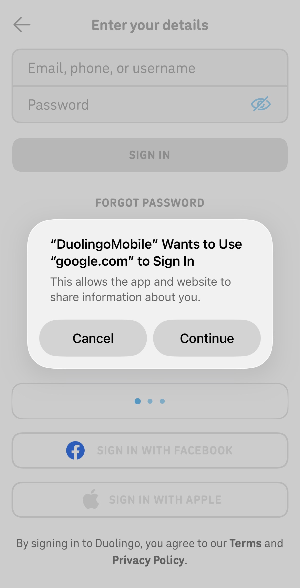
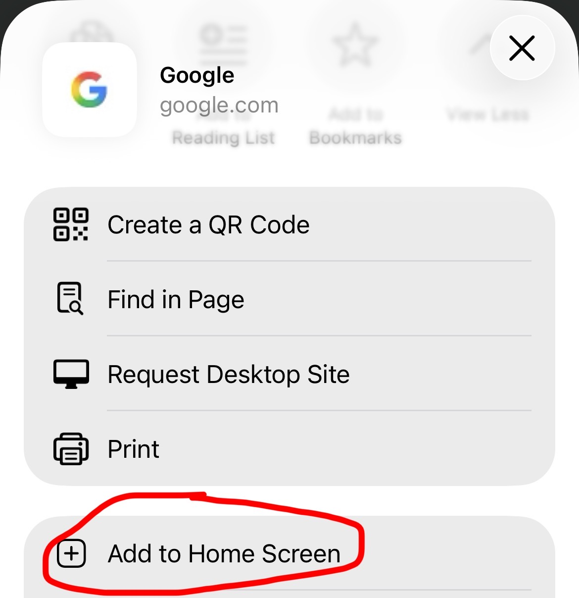
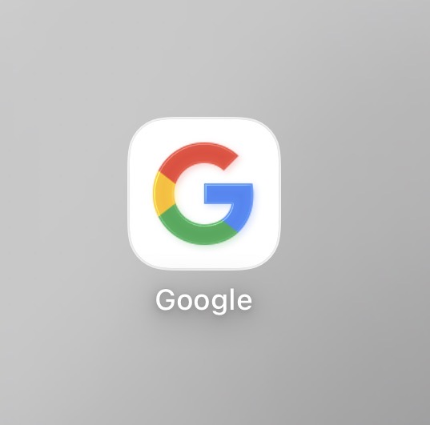
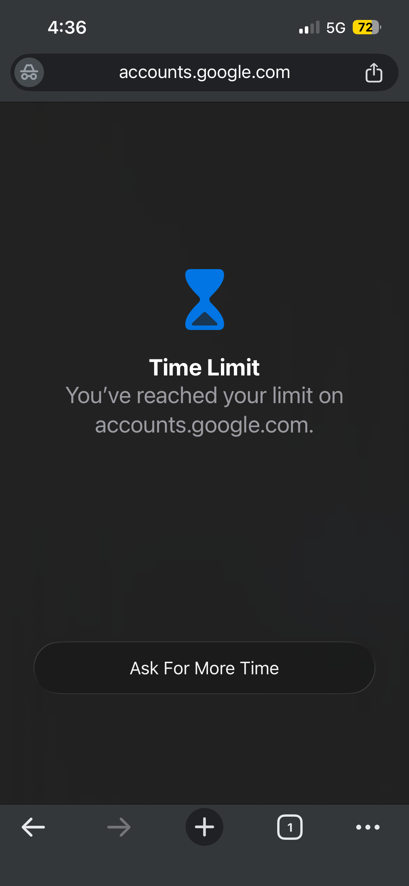
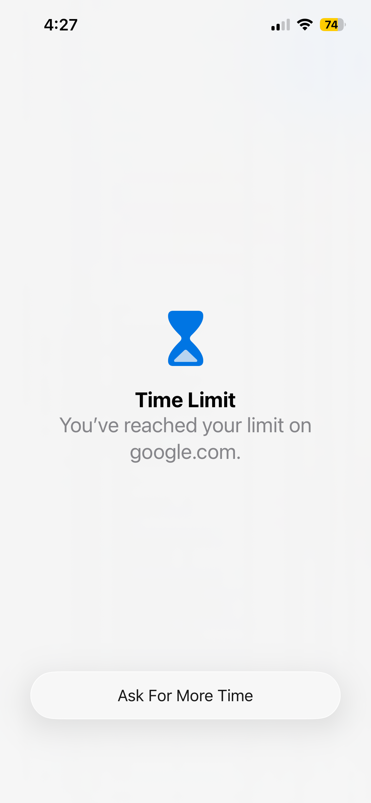

iOS has evolved over time, making the operating system more complex with every update. Which also means there’ll undoubtedly be plenty of fun glitches to mess around with. However, new iOS versions are slowly patching some of the exploits I’ve discovered, so staying on iOS 18 is recommended. (Unless you want the latest security updates.)
Screen Time settings
iOS has powerful Screen Time tracking and restrictions, some of which have flaws. There are also different levels of security.
iOS 26 introduced more integration with 3rd party browsers, so if you’re planning on browsing the web privately, DO NOT UPDATE. Anything from iOS 18 and below does not track website history in the Screen Time settings, as long as you’re using a 3rd party browser, which is anything other than Safari.
However, iOS 26 does have a single helpful feature, which is the ability to toggle Web Apps. It’s slightly more difficult to do on previous OS versions, but it’ll only take an extra minute from your life.
Easiest method: Sign-in prompts and embedded browsers
When using an app like Duolingo, Goodnotes, etc. you’ll be given a sign-in prompt when you use another provider to sign in. For this example, I’ll be using Google with Duolingo.
Once you see the sign-in prompt, continue to the embedded browser . You’ll notice that there are no restrictions on the embedded browser due to the way it’s handled; iOS sees it as the only way to login to the app and disables restrictions.  After choosing a website, use the share feature. You will see an option called “Add to Home Screen.”
    Immediately after opening the other website, use the previous page button to go to your original page, then open the other website again, do this as quick as possible. If you do it correctly then Screen Time will be disabled for the entire browser.
In order to enable it, you must know the Screen Time passcode or have it already disabled. If the Screen Time passcode is disabled, you can simply set a custom Assistive Access code. If the Screen Time passcode is enabled, you'll need to enter it to use Assistive Access.
Bypassing Screen Time on the Web
From here you navigate like a maze. If you’re using Google, at the bottom of the page there will be a button that says “Privacy.” After clicking that, you’ll see the standard Google Apps icon at the top of the page. Open Google and you’re good to go.
his method is actually more powerful than the Web Apps method, as it actually doesn’t track screen time used in the embedded browser—it only tracks the app you’re using. So, it’ll show up as “Duolingo” (or whatever app you’re using) in Screen Time settings. The only downside to the embedded browser is the space reserved for the cancel button and other stuff, which slightly reduces the size of the window. (On iPad it’s also much worse, as embedded browsers can’t go into full screen.)
Easy but more advanced method: Web apps
In your browser, open a website that you’ll use to bypass screen time. Preferably something you can use to redirect yourself to another website. For example: raindrop.io is a bookmark manager that supports web apps on old iOS versions. (If you’re on iOS 26 or newer then any site will be supported.) Since you can add bookmarks, you can simply make a bunch and open any site. I think you get the idea.
If you’re on iOS 26 you will see an option called “Open as web app.” Make sure that’s enabled.
After you add it to your Home Screen, it will appear alongside your other apps. (I’m using Google as a placeholder. Google as a Web App won’t work on iOS 18 and older.)
Make sure you’re in a Web App by looking at the browser: if you’re in full screen then you did it correctly. (For iOS 18 and older: if the app opens in a browser, that website isn’t supported.)
Now here’s the tricky part… you need to successfully glitch the Web App into disabling restrictions. Once you click “One more minute,” you’ll need to act fast. The first method is breaking Screen Time restrictions completely: use any sort of link that brings you to another site. If you’re on a bookmark manager, then open one of the links. If you’re on a search engine, open a link after searching. There’s plenty of ways, so just find a way to redirect to another website.
If you’ve already used your “One more minute,” you can still use the Web App. Simply open it and then switch between another app and back extremely quickly—if done correctly, there won’t even be a prompt to enter in the screen time passcode. (Low power mode makes this easier on most devices, since it slows down background processes like Screen Time and gives you more time before it enables.) However, you’ll still need to use a link to break it completely or it’ll automatically enable restrictions again after a short amount of time.
Bypassing Screen Time on Apps
Bypassing app restrictions are much harder, and can only be done in inconvenient ways. But, if you need to do something quick, then it'll work.
Assistive Access
iOS's "Assistive Access" feature can be found in accessibility settings. It's basically just dumb mode for your device. Except it also has zero screen time features.
Retarting the device
(Patched in iOS 26. Only works in iOS 18 and below.) Restarting iOS will restart everything in the system, including Screen Time. After you shut down and power on, you'll have one minute with no restrictions, pretty simple.
There is more to come. Stay tuned for updates! If you have any suggestions or bypassing methods, don't forget to tell me in the repository! Pull requests